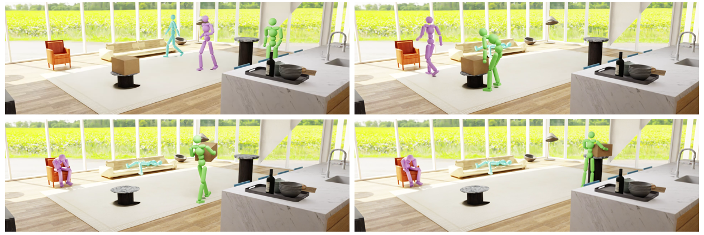

Mohamed Hassan (1)Yunrong Guo (2)Tingwu Wang (2)Michael Black (3)Sanja Fidler (4, 2)Xue Bin Peng (5, 2)
(1) Electronic Arts(2) NVIDIA (3) Max-Planck-Institute for Intelligent Systems(4) University of Toronto (5) Simon Fraser University

Abstract
Movement is how people interact with and affect their environment.
For realistic character animation, it is necessary to synthesize
such interactions between virtual characters and their surroundings.
Despite recent progress in character animation using machine
learning, most systems focus on controlling an agent’s movements in
fairly simple and homogeneous environments, with limited
interactions with other objects. Furthermore, many previous
approaches that synthesize human-scene interactions require
significant manual labeling of the training data. In contrast, we
present a system that uses adversarial imitation learning and
reinforcement learning to train physically-simulated characters that
perform scene interaction tasks in a natural and life-like manner.
Our method learns scene interaction behaviors from large unstructured
motion datasets, without manual annotation of the motion data. These
scene interactions are learned using an adversarial discriminator
that evaluates the realism of a motion within the context of a scene.
The key novelty involves conditioning both the discriminator and the
policy networks on scene context. We demonstrate the effectiveness
of our approach through three challenging scene interaction tasks:
carrying, sitting, and lying down, which require coordination of a
character’s movements in relation to objects in the environment. Our
policies learn to seamlessly transition between different behaviors
like idling, walking, and sitting. By randomizing the properties of
the objects and their placements during training, our method is able
to generalize beyond the objects and scenarios depicted in the
training dataset, producing natural character-scene interactions
for a wide variety of object shapes and placements. The approach
takes physics-based character motion generation a step closer to
broad applicability.
@article{
InterPhysHassan2023,
title={Synthesizing Physical Character-Scene Interactions},
author={Mohamed Hassan and Yunrong Guo and Tingwu Wang and Michael Black and Sanja Fidler and Xue Bin Peng},
year={2023},
eprint={2302.00883},
archivePrefix={arXiv},
primaryClass={cs.GR}
}